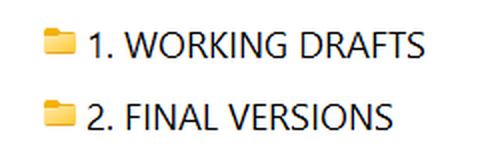
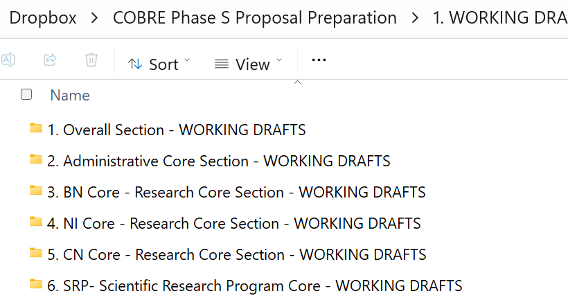
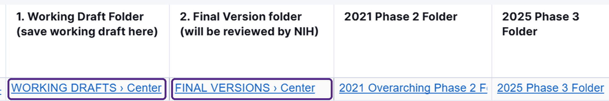
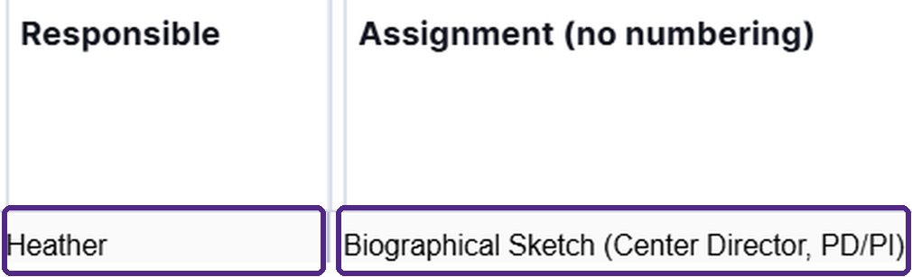
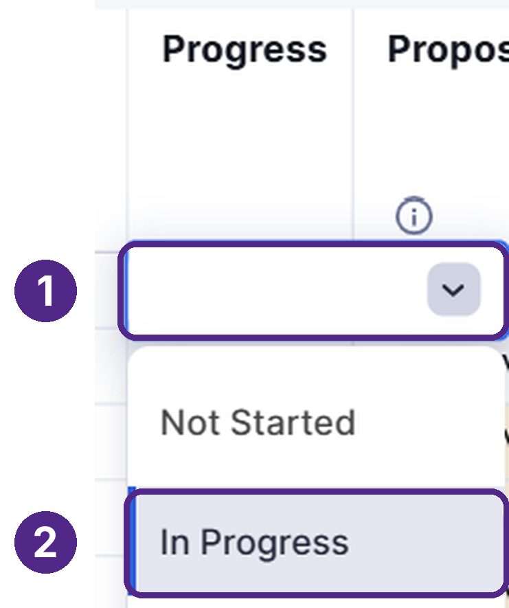

Universal resource · Submission Workflow and File Management
Workflow & File Management
Step by step: the 5 steps every document follows, from start to submission, where to save your files in Dropbox, and how to update your row in Smartsheet as you go.
Start Here: The Short Version
The short version
- Smartsheet lists your assignments, due dates, and folder links, and tracks where each document stands.
- Save your drafts in your component's WORKING DRAFTS folder in Dropbox, once you're comfortable sharing your drafts, and no later than each Internal Due Date.
- Don't save anything in FINAL VERSIONS. Morgan and Heather move documents to the FINAL VERSIONS folder, once Morgan and Heather have approved your final draft.
- If your piece overlaps with someone else's, we encourage you to connect with the colleague writing the overlapping piece so your sections complement each other. For example, each core's Specific Aims build on the Center Specific Aims, and each core's input feeds the Center's Organization and Management Plan.
- Don't hesitate to reach out with questions, delays, or changes. We are excited to work through any hurdles that emerge. While our writing window is snug, together we can make this proposal happen.
Message from the Admin Core
We appreciate the time, expertise, and care each of you brings to this process. Our goal is to make the writing and submission process as organized and straightforward as possible.
Please contact the Admin Core if you have questions about component requirements, file organization, deadlines, or submission procedures. Thoughtful organization, clear communication, and collaboration will help us develop a strong COBRE Phase S proposal that reflects our center's scientific vision, shared resources, and plans for continued success.
Warm regards, Admin team
From Start to Submission: The 5 Steps for Every Document
Every document follows the same 5 steps.





Helpful note: your assignment is considered final once Morgan and Heather have done a final review. Morgan and Heather will take responsibility for moving your document over to the FINAL VERSIONS folder.
Helpful Smartsheet Guidance
Smartsheet always has the latest information
Dates, links, and assignments are updated in Smartsheet first. If a date or link on this site (or in your packet) differs from Smartsheet, go with Smartsheet.
Open SmartsheetFinding and updating your assignments
- Sign in: accept the Smartsheet invitation email, then click Sign in and use your K-State account. The Smartsheet phone app works too.
- Find your rows: each row is one document. Use Smartsheet's Filter button to show only the rows where the Responsible column contains your name.
- Read across your row: Assignment names the document, Internal Due Date is when your draft should be saved in WORKING DRAFTS, and Writing Prompt/Directions has the NOFO's exact instructions.
- Handy shortcut (optional): your row also links to your folders. Click the 1. Working Draft Folder or 2. Final Version folder cell to open your component's folder in Dropbox. Further right are links to the 2021 Phase 2 and 2025 Phase 3 folders, the NIH instructions, and the Phase S NOFO.
Click a purple-outlined link to open the linked folder in Dropbox. - Update Progress as you work: click the row's Progress cell (the first column) and choose the status that matches your document's current stage. See the 5 steps above.
- Add the deadlines to your calendar (optional): subscribe to the Smartsheet calendar in Outlook or Google Calendar, and date changes update automatically.
Progress Status Definitions (5 Total)
Progress is the first column in Smartsheet, with one cell per document.
Please keep your document's Progress status current so the Admin Core can see where each document stands, line up reviews, and spot delays early.
(Your status also feeds the Proposal Preparation: Percent Complete section on the Dashboard, which updates twice each weekday. Only documents marked “Finalized” count as complete.)
| Progress status | What the status means | Who changes the status | Where your document is |
|---|---|---|---|
| Not Started | Work hasn't started yet. | You | No document yet |
| In Progress | You're writing the document. | You | Your WORKING DRAFTS folder |
| Ready for Review | Your draft is ready for your reviewer: Roxana, Tim, or Kim inside K-State, or the external scientific reviewer. | You | Your WORKING DRAFTS folder |
| Applying Reviewer Feedback | You're applying your reviewer's edits. | You | Your WORKING DRAFTS folder |
| Finalized | Morgan and Heather have done the final review and moved the document to FINAL VERSIONS. | Morgan and Heather | Your FINAL VERSIONS folder |
Who reviews your document
The Admin Core will tell you who your reviewer is for each document. You're welcome to suggest a reviewer.
When your edits are finished
Let Morgan and Heather know. Morgan and Heather do the final review, move your document to FINAL VERSIONS, and change Progress to Finalized. Please kindly refrain from moving your document to the FINAL VERSIONS folder or changing your document's Progress status yourself.
Folder Organization: Saving Your Documents (Dropbox)
Each component has two Dropbox folders: WORKING DRAFTS (where you save your work) and FINAL VERSIONS (approved documents only).
In addition to the list below, your individual guidance page also links to your two folders.
WORKING DRAFTS: shared repository
We respect that you may not wish to put very new or rough drafts in a shared space. Once a draft is at a point where you're comfortable with others seeing your work, we invite you to save that draft in the WORKING DRAFTS folder.
Note: of course, your draft is required to be saved in the WORKING DRAFTS folder by your assignment's Internal Due Date.
FINAL VERSIONS: approved documents only
Morgan and Heather move approved, submission-ready documents into FINAL VERSIONS. (To learn how a document gets from WORKING DRAFTS to FINAL VERSIONS, see From Start to Submission: The 5 Steps for Every Document.)
Starting a new document
- If NIH provides a form for your required document, start from the NIH form. (Stock format pages primarily only exist for biosketches and Current & Pending (Other) Support, which are built in SciENcv, and the Data Management and Sharing (DMS) Plan, which has an NIH format page to start from.)
- Write your document using the component's directions, and by following CNAP's Formatting Conventions.
- Once you're comfortable with others seeing your draft, save your document in your component's WORKING DRAFTS folder.
As you write, we encourage you to keep the whole proposal in mind. If your piece touches someone else's (the science, core activities, milestones, evaluation measures, or budget requests), check with the colleague writing that piece so the pieces match.
Prior Proposals for Your Reference
2025 Phase 3 drafts
For reference: what you wrote last year for the older, now-expired NOFO.
Open in Dropbox